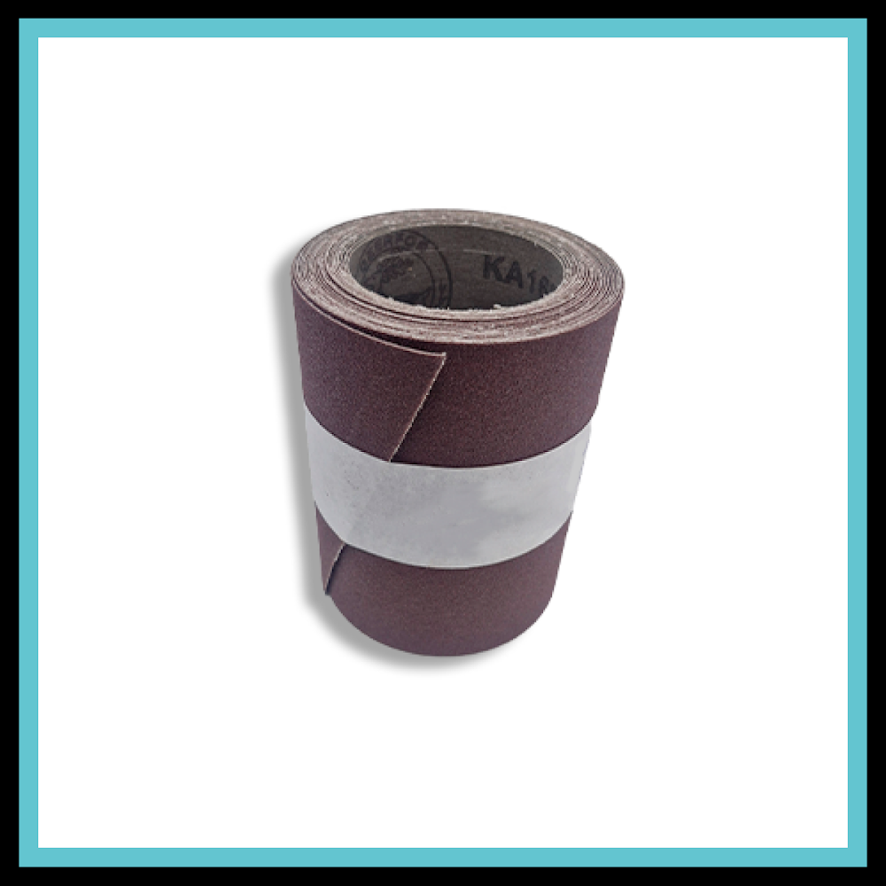
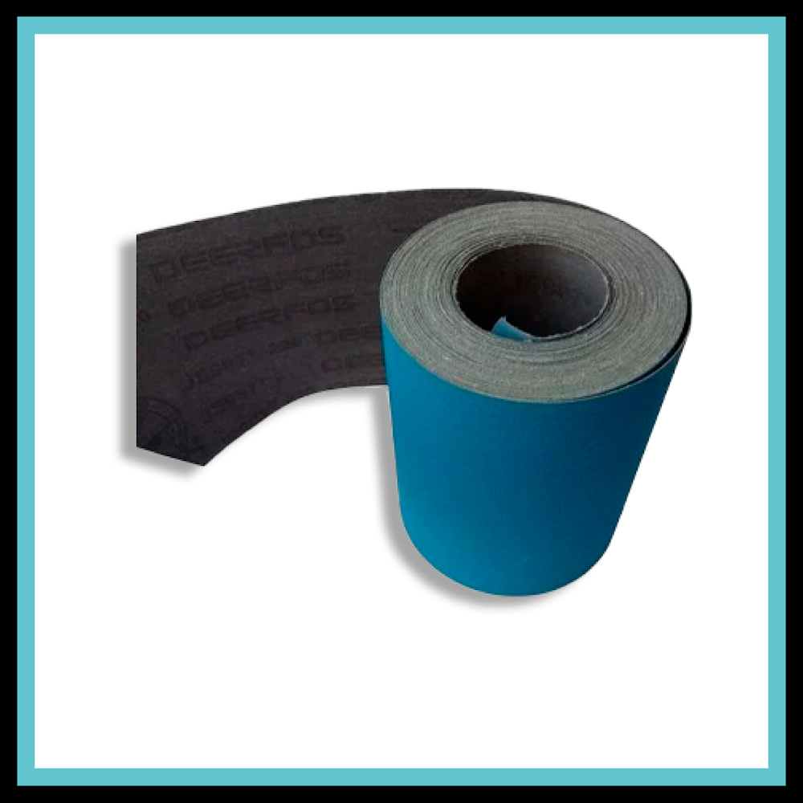
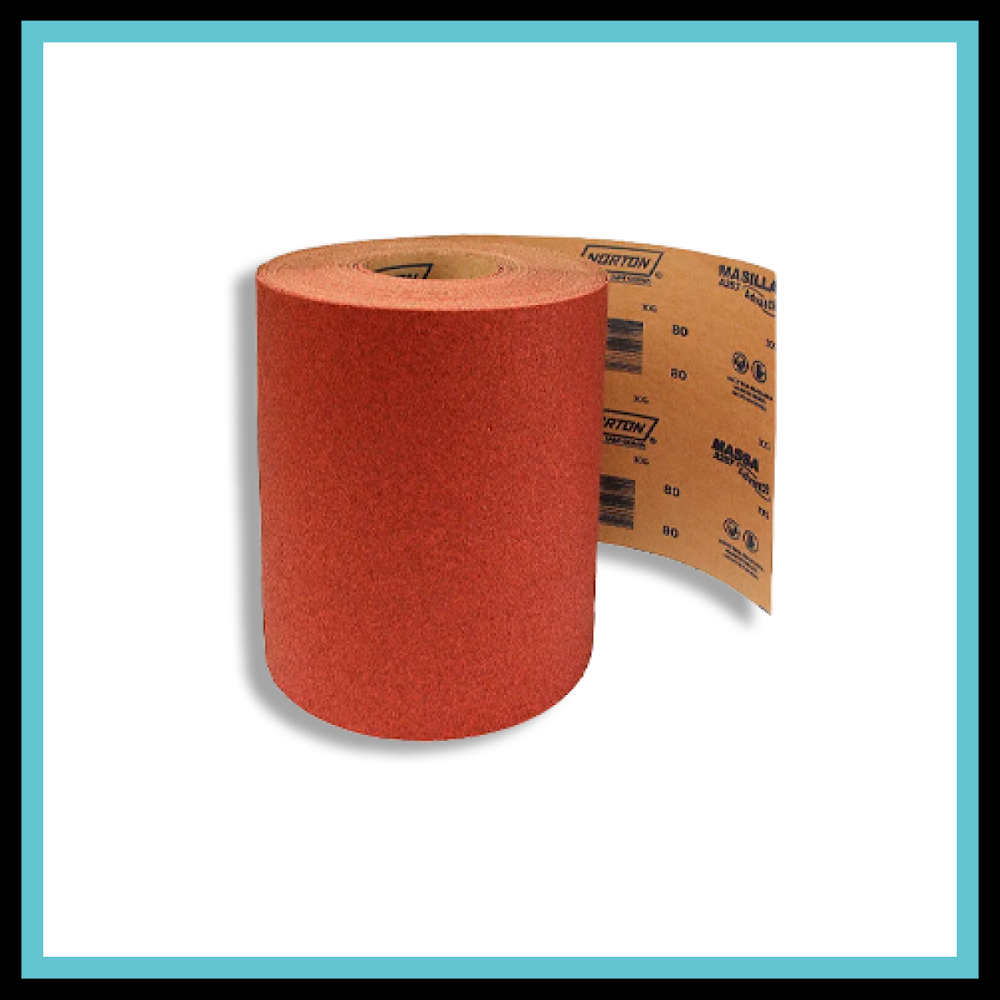
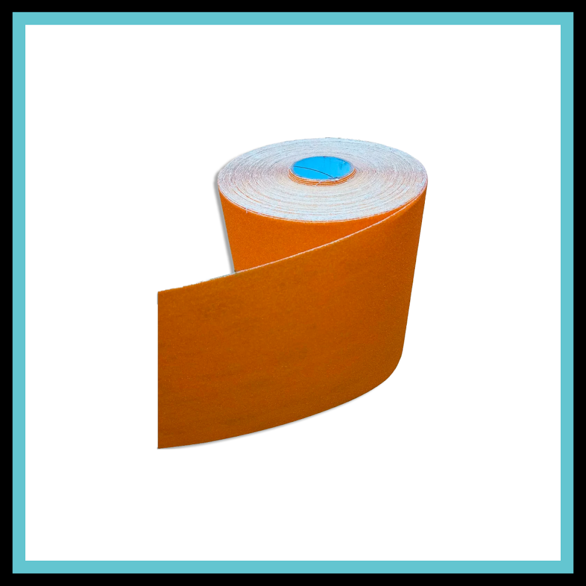

Rolos de Lixa
Versatilidade para cada aplicação
Soluções abrasivas em rolo para corte sob medida, uso manual ou fabricação de peças abrasivas, disponíveis em diferentes larguras, comprimentos e granulometrias.
Rolos e Jumbos
Materiais disponíveis

Óxido de Alumínio
- Alta versatilidade
- Excelente custo-benefício
- Ampla variedade de granulometrias
Uso geral em metais ferrosos, madeiras, plásticos e diferentes processos de lixamento e acabamento.

Zircônio
- Alto poder de remoção
- Excelente desempenho em metais
- Boa resistência em aplicações exigentes
Indicado para operações de maior remoção em aço carbono, inox e outros metais.

Cerâmico
- Alta capacidade de corte
- Maior durabilidade
- Alto desempenho em ligas metálicas duras
Indicado para aplicações exigentes, remoção de material e trabalhos em aços, inox e ligas metálicas.

Óxido Flexível
- Alta flexibilidade
- Ideal para acabamentos finos
- Boa adaptação a superfícies e contornos
Acabamento, polimento e trabalhos que exigem maior flexibilidade e adaptação à superfície.
Guia de seleção — Rolos
| Largura | Comprimentos disponíveis | Fornecimento | Grãos disponíveis |
|---|---|---|---|
| 50 mm | 5 m • 10 m • 25 m • 50 m | Rolo | P36 a P600 |
| 70 mm | 5 m • 10 m • 25 m • 50 m | Rolo | P36 a P600 |
| 150 mm | 5 m • 10 m • 25 m • 50 m | Rolo | P36 a P600 |
| 300 mm | 5 m • 10 m • 25 m • 50 m | Rolo | P36 a P600 |
Granulometrias disponíveis
Principais aplicações
Corte sob medida
Permite preparar folhas, tiras e peças abrasivas nas dimensões necessárias para cada processo.
Uso manual
Indicado para operações manuais de lixamento, preparação, ajuste e acabamento de superfícies.
Fabricação de peças abrasivas
Pode ser utilizado como matéria-prima para fabricação e conversão de diferentes formatos de produtos abrasivos.
Acabamento
Opções de materiais e granulometrias para diferentes níveis de remoção e acabamento superficial.
Os tamanhos apresentados são apenas alguns exemplos do nosso catálogo. Produzimos rolos em diversas larguras e comprimentos, inclusive sob medida para sua aplicação.
Onde comprar
Encontre nossos produtos nas principais lojas online